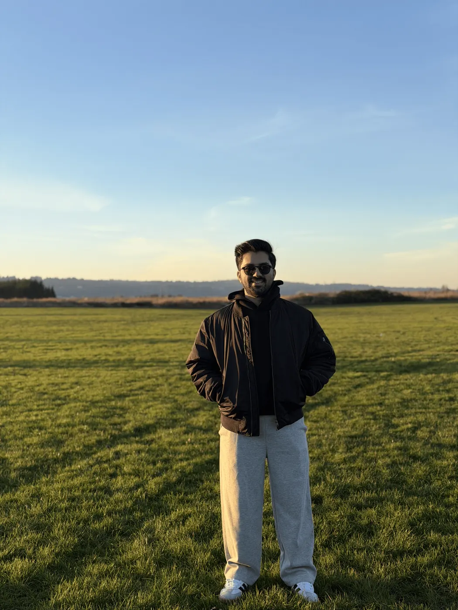
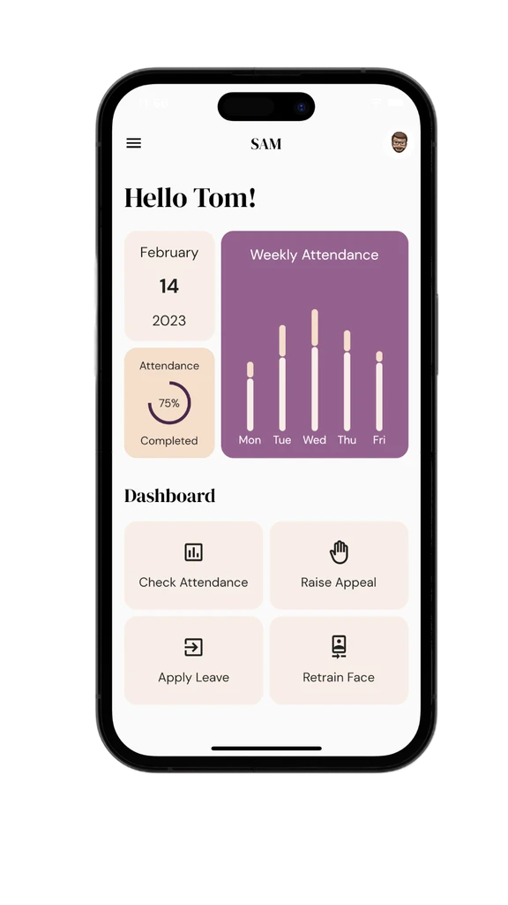
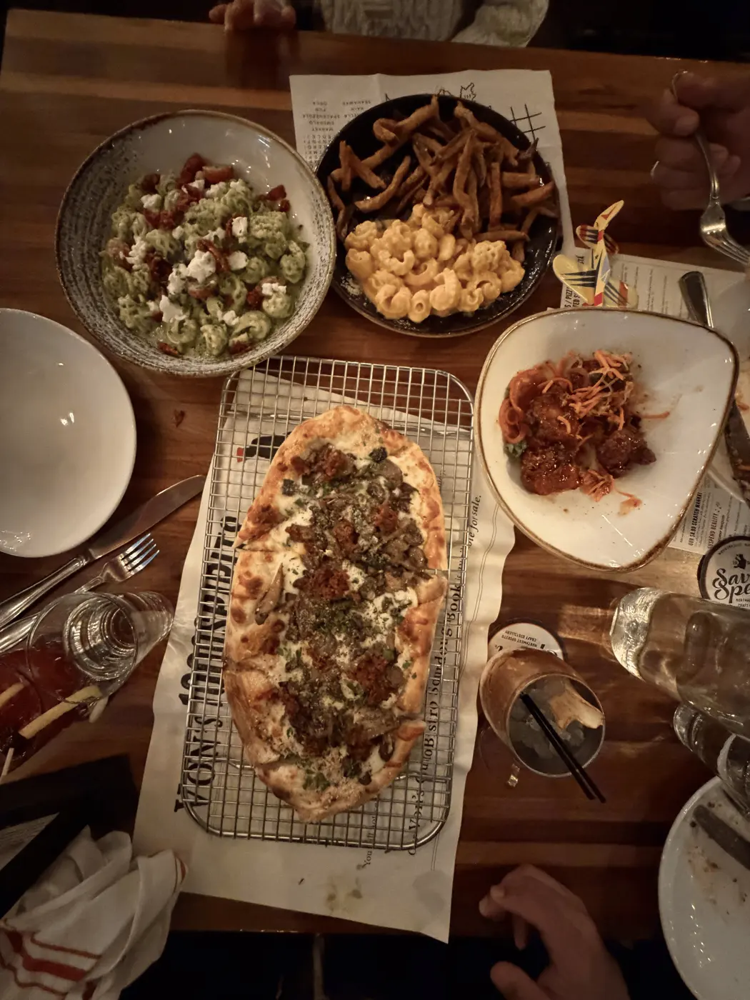

Meet Ansh. A backend and distributed-systems engineer with 3.5 years in production, finishing an MS at Stony Brook.

Fast systems. Quietly reliable.
Backend & Distributed Systems Engineer. 3.5 years in production at Headout and Intuit. MS Computer Science at Stony Brook, GPA 4.0.
Available for full-time roles from May 2027 · 9:54 PM in New York
Meet Ansh. A backend and distributed-systems engineer with 3.5 years in production, finishing an MS at Stony Brook.

Identity at Intuit scale. Summer 2026 on the Identity & Session Platform, the SSO behind TurboTax, QuickBooks, Credit Karma and Mailchimp.
Intern to senior at Headout. Three and a half years, from Hub’s backend foundations to building the Creators Platform as the sole engineer.
Upstream, in the open. Merged pull requests across gccrs, KotlinDL, Multik, KMath and nixpkgs.
MS Computer Science. Stony Brook University, advised by Prof. Erez Zadok. Graduating May 2027.
National hackathon winner. SAM, an offline-first face-recognition attendance app, won Smart India Hackathon 2022.

Published, first author. Lightweight dynamic elliptic-curve cryptography for constrained devices, Springer CCIS 2021.
3.5 years in production, from intern to senior engineer at Headout, then Intuit’s identity platform.
Services powering SSO across TurboTax, QuickBooks, Credit Karma, and Mailchimp, spanning billions of token-validation requests for 100M+ customers at 99.9%+ availability.
Led backend for two new product surfaces at the top of Headout’s supply funnel.
Backend infra that cut operational cost and unlocked scale.
An early backend engineer on Hub, Headout’s B2B platform on Spring Boot WebFlux with REST & GraphQL APIs.
Database research, a vision-language benchmark, a programming language, and a national hackathon win.
A schema-aware MVCC optimization in Mako that stores only modified columns.
A vision-language benchmark for fit-in spatial reasoning with 220 image–question pairs across 60–70 categories.
An interpreted object-oriented language built from scratch in 2,300 lines of Rust.
A face-recognition attendance app for classrooms: offline-first mobile, a retrainable recognition pipeline, and weekly analytics.
16 merged PRs across the Kotlin & Rust ecosystems, and the stack I ship with every day.
Ferries, mountains, and a lot of pizza.

Email is fastest. I usually reply within a day.
{{ hero.title }}. {{ hero.sub }}
{{ hero.status }} · {{ clock }} in New York
{{ c.lead }} {{ c.text }}
Every number here was measured in production, before and after.
3.5 years in production, from intern to senior engineer at Headout, then Intuit’s identity platform.
{{ x.intro }}
Database research, a vision-language benchmark, a programming language, and a national hackathon win.
{{ p.intro }}
{{ p.quote }}
{{ openSource.count }} {{ openSource.label }}, and the stack I ship with every day.
Ferries, mountains, and a lot of pizza.